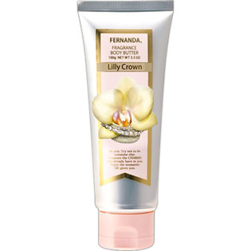

返回列表
产品名称：フェルナンダ フレグランスボディバター リリークラウン

ＦＥＲＮＡＮＤＡ ＪＡＰＡＮ フェルナンダ フレグランスボディバター リリークラウン １００Ｇ
メーカー ＦＥＲＮＡＮＤＡ ＪＡＰＡＮ
JANコード 4571395822073
商品の特徴
柔らか肌へ導くボディバター。
- 成分・分量
- 水、ステアリン酸、グリセリン、セタノール、ミネラルオイル、シア脂、(アクリル酸ヒドロキシエチル／アクリロイルジメチルタウリンNa)コポリマー、香料、ジメチコン、プロパンジオール、ステアリン酸グリセリル(SE)、ブチルカルバミン酸ヨウ化プロピニル、加水分解コラーゲン、スクワラン、マカデミアナッツ油、ホホバ種子油、オリーブ油、BG、ヒアルロン酸Na、ローズヒップ油、アロエベラ葉エキス
- 用法及び用量
- 適量を手に取り、脚、ヒジ、ヒザ等、乾燥が気になる部分にしっとりと馴染むまで塗り込んでください。